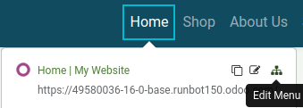
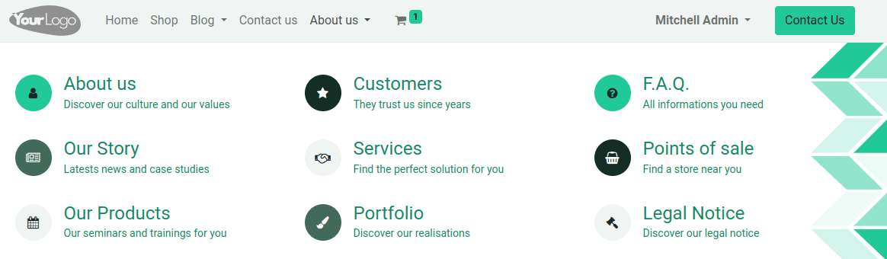
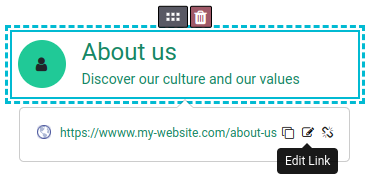

Menús¶
Los menús se utilizan para organizar el contenido de su sitio web y ayudan a los visitantes a navegar a través de sus páginas web de manera eficiente. Los menús del sitio web fáciles de usar y bien estructurados juegan un papel importante en mejorar el posicionamiento en los motores de búsqueda. de las páginas.
Odoo le permite personalizar el contenido y estética de los menús de sus sitios web de acuerdo con sus necesidades.
Editor de menú¶
El editor de menú le permite editar el menú de sus sitios web y agregar elementos comunes de menú y mega menús.
Para editar el menú del sitio web, vaya a Sitio web ‣ Sitio ‣ Editor de menú. Desde ahí, podrá:
renombrar un elemento del menú o cambie su URL usando el icono de Editar elemento del menú;
eliminar un elemento del menú usando el icono Eliminar elemento del menú;
mover un elemento del menú arrastrándolo y soltándolo en el lugar que desee del menú;
crear un menú desplegable estándar arrastrando y soltando los elementos del submenú a la derecha, debajo de su menú principal.
Nota
También puede acceder al editor del menú haciendo clic en Editar, seleccionando cualquier elemento del menú y haciendo clic en el icono de Editar Menú.
Agregar elementos estándares del menú¶
De manera predeterminada, las páginas se agregan como elementos estándares del menú cuando se crean. También puede agregar estos elementos desde el editor del menú haciendo clic en Agregar elemento de menú. Escriba el Nombre y la URL de la página relacionada en la ventana emergente que aparece en la pantalla y haga clic en OK.
Truco
En el campo URL o Correo electrónico puede escribir / para buscar una página en su sitio web o # para buscar un anclaje personalizado ya existente.
Agregar mega menús¶
Los mega menús son similares a los menús desplegables, pero en lugar de ser una simple lista de submenús, muestran un panel dividido en grupos de opciones para navegar. Esto los hace perfectos para sitios web con grandes cantidades de contenido, pues pueden ayudar a incluir todas sus páginas web en el menú mientras deja visibles todos los elementos del menú al mismo tiempo. Los mega menús también se pueden estructurar de una manera más visual que los menús desplegables estándar. Por ejemplo, con el diseño, la tipografía, iconos.
Para crear un mega menú, vaya a Sitio web ‣ Sitio ‣ Editor de menú y haga clic en Agregar elemento de mega menú. Escriba el Nombre del mega menú en la ventana emergente, haga clic en OK y luego en Guardar.
Para adaptar las opciones y el diseño del mega menú, haga clic en la barra de navegación y luego en Editar. Los mega menús se componen de bloques de creación, lo que significa que puede personalizar cada componente de manera individual usando formato en línea, así como todas las opciones disponibles en la pestaña Personalizar en el creador de sitios web. Por ejemplo, puede:
editar el texto directamente desde el bloque de creación;
editar la URL de un elemento del menú seleccionándolo y luego haciendo clic en el botón de Editar enlace en la pequeña ventana emergente de previsualización. Escriba
/para buscar una página en su sitio web o#para buscar un anclaje personalizado ya existente.mover un elemento del menú arrastrando y soltando el bloque de creación correspondiente en la posición que desee;
eliminar un elemento del menú eliminando el bloque de creación correspondiente.
Truco
Puede adaptar el diseño general del mega menú seleccionando la Plantilla y Tamaño deseados en la sección del guilabel:Mega menú en la pestaña de Personalizar en el creador de sitios web.
Encabezado y apariencia de la barra de navegación¶
Para personalizar la apariencia del menú de su sitio web, haga clic en Editar, luego seleccione la barra de navegación o cualquier elemento del menú. Puede adaptar los campos en las secciones de Encabezado y de Barra de navegación en la pestaña Personalizar en el creador de sitios web.